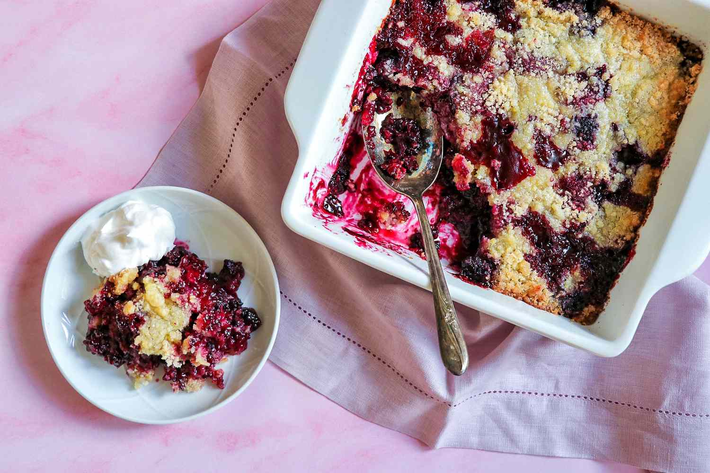

Blackberry Cobbler

Description
Recipe Source
Ingredients
- cooking spray
- 1 (16 ounce) package frozen blackberries
- 2 tablespoons white sugar
- 1 teaspoon freshly squeezed lemon juice
- ¼ teaspoon vanilla extract
- 1 cup all-purpose flour
- 1 cup white sugar
- 1 large egg
- 5 tablespoons butter, melted
- frozen whipped topping, thawed
Steps
-
Preheat the oven to 375 degrees F (190 degrees C).
Spray an 8-inch or 9-inch square baking dish with nonstick cooking spray.
-
In a large bowl, gently stir the frozen blackberries together
with 2 tablespoons sugar, lemon juice, and vanilla extract.
Spread into the bottom of the prepared baking dish.
-
Combine flour, remaining 1 cup sugar, and egg together
in a bowl until mixture resembles a coarse meal.
Sprinkle mixture evenly over the blackberries.
Drizzle melted butter evenly on top.
-
Bake in the preheated oven until lightly browned and bubbly, 35 to 40 minutes.
Remove from the oven and let cool for 10 minutes.
Serve warm topped with whipped topping.